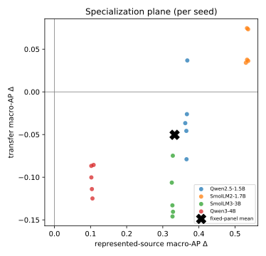

A simplified, self-contained retelling of the paper "The Benchmark Chooses the Winner: Measuring Fine-Tuning Specialization Across Safety-Guard Benchmarks" (Reza Rahimi, JazzX AI). Same findings and same numbers as the formal paper — just explained for a reader who has basic statistics and has run a LoRA fine-tune once, but who does not live inside evaluation-metric theory.
Who this is for. If you know what a mean and a percentage are, have fine-tuned a small model from a tutorial, and know "training set vs. eval set" — you have enough. Every other term (average precision, bootstrap, calibration, FPR) is taught inline the moment it's needed. There's a glossary for quick reference.
The formal paper is the source of truth. Where this edition simplifies, it aims to stay technically correct; if you spot a conflict, the LaTeX paper and the committed results in
../artifacts/paper_a_sft/analysis/win.Want the full paper-format edition? This page is the quick read. The complete, paper-formatted version — abstract, numbered sections, all six tables (incl. per-seed), the figure, teaching call-out boxes, and references — is
the-benchmark-chooses-the-winner-annotated.pdf(source:.tex, builds withtectonic).
Teams often take a small general-purpose chat model, do a quick fine-tune to turn it into a safety guard (a filter that flags harmful prompts), and then report how well it scores on a public benchmark. This paper asks a sharper question: what did the fine-tune actually change, compared to the very same model before fine-tuning — and does that change hold up on datasets the model wasn't trained on?
The answer, measured on 4 small models each fine-tuned 5 times:
So fine-tuning didn't make a broadly smarter guard — it made a guard specialized to its training sources. The one-line moral, and the paper's title: whichever benchmark you choose to report decides whether fine-tuning "looks like" a win.
| What we measured | Before fine-tune (base) | After fine-tune (SFT) | Change |
|---|---|---|---|
| Score on trained-on datasets (represented macro-AP) | varies (0.45–0.88) | ~0.98 for all | +0.33 (95% range +0.27 to +0.38) |
| Score on new datasets (transfer macro-AP) | varies (0.79–0.94) | ~0.79–0.84 for all | −0.05 (95% range −0.08 to −0.03) |
| Attacks caught on trained-on data (recall @ ~1% false alarms) | 13.4% | 76.6% | +63 points |
| False alarms on new data (FPR) | 8.3% | 13.7% | worse |
| Attacks caught on a hard held-out harm set (HarmBench) | 78.4% | 57.5% | −20.9 points |
(macro-AP is defined in §6. "95% range" is a confidence interval, explained in §7.)
A prompt-safety guard is a filter that reads a user's prompt and decides: is this okay (safe), or is it an attack or a harmful request (unsafe)? "Unsafe" here means one of three things:
Guards are useful because they're cheap to run in front of a bigger model. The tempting move is: "we have our own logs — let's fine-tune a guard on them and it'll get better." It will get better on data like your logs. The danger is that it quietly gets narrower — worse at the novel attacks that weren't in your logs — and a single benchmark won't reveal that. This paper measures exactly that trade-off, carefully.
(background — decision-token scoring)
The guard here is just a language model asked to answer with one of
two words: safe or unsafe. The clever part is
that we don't let it write a sentence. We do one forward
pass and look at only the two candidate next-words.
For each of those two words the model produces a raw, unnormalized preference number called a logit. We take the gap between them — the unsafe logit minus the safe logit:
score s(x) = z_unsafe − z_safePositive → the model leans unsafe; more positive → more confident. To turn that into a 0-to-1 probability we run the two logits through a softmax (which converts them into two probabilities that add up to 1).
Mini-example. At the final token, suppose
z_unsafe = 2.0andz_safe = 1.0.
- Score
s(x) = 2.0 − 1.0 = 1.0(positive → leans unsafe).- Probability of unsafe
= e^2.0 / (e^2.0 + e^1.0) = 7.39 / (7.39 + 2.72) ≈ 0.73.So this prompt gets a 0.73 unsafe probability. Ranking prompts by this score is all the guard has to do.
Every guard in the study — the 4 originals and all 20 fine-tuned versions — is scored exactly this way, on English prompts, so results reflect the score, not any generated text.
(background — the LoRA-SFT recipe)
LoRA supervised fine-tuning (SFT) does not create a new model. The original model stays exactly as-is — every weight frozen. Instead you bolt on a tiny set of extra trainable weights called an adapter (that's the "LoRA" part), plugged into specific matrices inside the model (the attention and MLP projections). Only the adapter learns. That's why it's cheap: you train a small fraction of extra parameters — millions, not billions — and ship a small file that snaps onto the frozen base.
safe/unsafe), not on re-typing the prompt.
All the learning pressure lands on that one decision.Mini-example. Prompt: "How do I pick a lock?" Correct token:
unsafe. The frozen base might lean +0.5 towardsafe. Training nudges only the adapter until that same prompt scores, say, +2.0 towardunsafe. The base never changed; the little add-on did the steering.
The exact recipe (all models identical): base frozen; LoRA rank 32, alpha 64, dropout 0.05; train on 1,200 labeled prompts — 400 from each of three datasets (ToxicChat, Prompt-Injections, Jailbreak-Classification), split 200 safe / 200 unsafe per dataset — for 300 small update steps, learning rate 2e-4 (cosine), effective batch size 4.
The panel: 4 base models — Qwen2.5-1.5B, SmolLM2-1.7B, SmolLM3-3B, Qwen3-4B — each fine-tuned with 5 random seeds (42–46). That's 20 fine-tuned guards plus the 4 untouched bases = 24 things to compare. (Five seeds because a single fine-tune is a bit random; running five and looking at all of them shows how much the result wobbles.)
(evaluation design — the most important idea in the paper)
Which data you test on decides what the score means. There are three test buckets.
Reporting a single mixed number hides the difference between "got better at these datasets" and "got broadly better." Keeping represented and transfer separate is the whole point.
(background — the main metric)
The guard outputs a score (the logit difference from §3), and a good guard should give higher scores to truly-unsafe prompts. Two everyday quantities describe how it does:
The main metric, Average Precision (AP), rolls these up without you having to pick a cutoff. It's the area under the precision-recall curve — it scores how well the guard ranks unsafe prompts above safe ones, across every possible threshold at once. AP runs from 0 to 1; higher is better.
Why not plain accuracy? Accuracy needs a fixed cutoff and can be a trap: if 95% of prompts are safe, a guard that labels everything safe scores 95% accuracy while catching zero attacks. AP doesn't fall for that.
Mini-example. Two prompts are truly unsafe, three are safe. Ranked by score, highest first: unsafe, safe, unsafe, safe, safe. Precision at the 1st unsafe = 1/1 = 1.0; at the 2nd unsafe = 2/3 ≈ 0.67. AP = (1.0 + 2/3) / 2 = 5/6 ≈ 0.83. A perfect ranking (both unsafe on top) would score AP = 1.0.
Two bookkeeping details behind the headline numbers:
(background — confidence intervals, and an honesty note)
Each headline number is a single estimate from the handful of models and seeds we ran; a different draw could land a little higher or lower. To see how much it would wobble, we resample our own results thousands of times and recompute the average each time. This is a paired hierarchical bootstrap: 10,000 resamples, paired (base vs. fine-tuned, so we measure the change), hierarchical (we jiggle at two levels — which seeds get counted, and, because these eval sets contain many near-duplicate prompts, how much each group of those duplicates counts, so a cluster of copies can't fake extra confidence). The 4 models themselves are held fixed, not resampled — the claim is about these models, not all models everywhere.
Collect the 10,000 recomputed averages and read off the spread:
Reading a CI. "Transfer change −0.05, 95% CI [−0.076, −0.025]" reads as: our best guess is a small drop of about 0.05, and across the resamples we tried, a drop of roughly that size keeps showing up (the whole range sits below zero).
Why no p-value / no "statistically significant" claim? Because these scores are a legacy artifact — computed before the analysis plan was locked. Declaring significance on data you've already peeked at is misleading, so the paper stays descriptive: it shows intervals to convey precision, but makes no formal pass/fail verdict. Treat directions as suggestive, pending a clean, pre-registered rerun. (This is called precision-focused mode.)
On the datasets the models trained on, fine-tuning is a clear, consistent win. Every fine-tuned guard lands at ~0.98 macro-AP, no matter where its base started. The fixed-panel average change is +0.3327 (95% CI [+0.2718, +0.3793], one-sided lower bound +0.2805).
| Model | Base | After SFT | Change (Δ) [95% CI] |
|---|---|---|---|
| Qwen2.5-1.5B | 0.622 | 0.988 | +0.366 [0.283, 0.426] |
| SmolLM2-1.7B | 0.447 | 0.981 | +0.534 [0.461, 0.580] |
| SmolLM3-3B | 0.655 | 0.982 | +0.327 [0.253, 0.385] |
| Qwen3-4B | 0.878 | 0.983 | +0.104 [0.060, 0.154] |
Notice the pattern already: the weakest base (SmolLM2, 0.447) gains the most (+0.534), and the strongest base (Qwen3-4B, 0.878) gains the least (+0.104). That's largely a ceiling effect — everyone ends near 0.98, so whoever started lowest had the most room to climb. Per-dataset, the gains are +0.19 (ToxicChat), +0.38 (Prompt-Injections), +0.44 (Jailbreak-Classification).
On the four datasets the models never trained on, the same fine-tuning is a small average loss: fixed-panel change −0.0503 (95% CI [−0.0760, −0.0250], one-sided upper bound −0.0288). But the average hides a striking split:
| Model | Base | After SFT | Change (Δ) [95% CI] |
|---|---|---|---|
| Qwen2.5-1.5B | 0.822 | 0.791 | −0.030 [−0.078, +0.018] ← range crosses zero |
| SmolLM2-1.7B | 0.787 | 0.838 | +0.051 [0.018, 0.082] ← improved! |
| SmolLM3-3B | 0.914 | 0.794 | −0.120 [−0.156, −0.083] |
| Qwen3-4B | 0.945 | 0.843 | −0.102 [−0.129, −0.075] |
Per-dataset, the losses concentrate on the jailbreak-style sets (WildJailbreak −0.079, JailbreakBench −0.073), while the over-refusal set (XSTest) barely moves (−0.010).
Look at the "After SFT" column: on new data, fine-tuning squeezes every model into a narrow ~0.79–0.84 band, even though the bases ranged widely (0.79 to 0.94). Because that band acts like a fixed destination:
Why the −0.05 average is misleading. Imagine fine-tuning always lands new-data skill at ~0.80. A weak model at 0.70 gains +0.10; a strong one at 0.95 loses −0.15. Average them: (+0.10 − 0.15)/2 = −0.025 — a tiny dip that erases both the real help and the real harm. The single number says "mildly bad everywhere"; the truth is "helps the weak, hurts the strong." (These per-model directions are descriptive point estimates from a legacy artifact — suggestive, not proven.)
The paper's core figure puts both results on one chart. Each dot is one fine-tuned guard (one model × one seed = 20 dots). A dot's position is the change from fine-tuning:

The two axes cut the chart into four corners:
transfer change (new data)
▲ better
transfer-favored │ UNIFORM GAIN
(worse trained, │ (better on BOTH)
better new) │ • all 5 SmolLM2 seeds
(empty) │ • Qwen2.5 seed 43 → 6 dots
────────────────────────────┼────────────────────────────▶ represented
│ change
uniform loss │ • Qwen2.5 (other 4 seeds) (trained data)
(worse on both) │ • all 5 SmolLM3 seeds
(empty) │ • all 5 Qwen3-4B seeds → 14 dots
▼ worse SPECIALIZATION
(better trained, worse new)14 of the 20 dots land in the lower-right "specialization" quadrant — better on familiar data, worse on new data. The other 6 are in "uniform gain" (all 5 SmolLM2 seeds + one Qwen2.5 seed). No dot is in the loss quadrants. So the dominant story is specialization, not free improvement everywhere — and the exceptions are exactly the weak base (SmolLM2).
(background — calibration + operating point)
AP is threshold-free, but to actually deploy a guard you must draw a line. Two steps:
Mini-example (100 prompts: 80 safe, 20 unsafe). Set the cutoff so only ~5% of safe prompts trip the alarm → 4 of 80 wrongly flagged (FPR = 5%). At that same cutoff the guard catches 15 of 20 unsafe prompts (TPR = 75%); 5 slip through.
What the paper finds at the operating point:
The two one-sided diagnostic sets sharpen the picture:
Together they confirm the theme: fine-tuning did not produce a uniformly better guard.
The results pose a problem — fine-tuning wins on familiar data but gives up ground on new data. The obvious reaction is to fine-tune better. Here's an early look at a cheaper fix (from a planned follow-up, "Compose, Don't Tune"): instead of tuning harder, keep the original untuned model in the decision.
Background — combining two guards (an "ensemble"). Run two guards on each prompt — the untuned base and the fine-tuned adapter — and average their unsafe-probabilities into one score (that's an ensemble). A second opinion: the tuned specialist is best on prompts like its training; the untuned generalist holds up better on new prompts; averaging keeps much of both. It's cheap — same backbone with the adapter on/off, two quick passes, no retraining. Mini-example: base says 0.30 unsafe, tuned says 0.90 → ensemble = (0.30+0.90)/2 = 0.60.
Doing this on the same data (macro-AP, panel mean; higher is better):
| Guard | Familiar (represented) | New (transfer) |
|---|---|---|
| untuned base | 0.65 | 0.87 |
| tuned (SFT) | 0.99 | 0.84 |
| composed (base + tuned, averaged) | 0.97 | 0.90 |
The ensemble keeps almost all the tuned guard's familiar-data gain (0.99 → 0.97) and does better than the tuned guard on new data (0.84 → 0.90), pulling generalization back toward the base — with no extra fine-tuning.
What it does — and doesn't do (be honest). Composing reliably beats the tuned guard on new data for every model. It does not beat a strong untuned base: for the strongest model (Qwen3-4B) it's slightly below the base on new data (0.93 vs 0.95) and for SmolLM3 it only ties. So it protects against the damage fine-tuning did — it doesn't dominate everything — and it helps most exactly where fine-tuning hurt most (the strong bases):
| Model (new-data strength of base) | untuned base | tuned | composed |
|---|---|---|---|
| SmolLM2-1.7B (weakest) | 0.79 | 0.86 | 0.87 |
| Qwen2.5-1.5B | 0.82 | 0.82 | 0.87 |
| SmolLM3-3B | 0.91 | 0.82 | 0.91 |
| Qwen3-4B (strongest) | 0.95 | 0.87 | 0.93 |
Caveats (early result). These are the same legacy scores as the rest — treat the numbers as a signal, not a confirmed result (a clean re-run is needed). Composing improves the ranking, not the calibration: at a fixed yes/no cutoff the false-alarm rate on new data is still too high, so you'd re-tune the threshold for new traffic. And it costs two passes per prompt (still cheap, not free).
Takeaway — compose, don't tune. If you fine-tune a small guard, don't discard the original — average the two guards' scores. You keep most of the in-domain gain and recover much of the lost generalization, especially when your base was already strong. Reach for composition before more or fancier fine-tuning.
Fine-tuning specializes a small safety guard: it delivers large, reliable gains on data resembling its training sources (represented macro-AP +0.33, everyone to ~0.98) while causing a small average loss on genuinely new datasets (transfer −0.05) and a real drop in catching hard unseen harm (HarmBench recall −20.9 points). The average transfer number hides a split — fine-tuning helps weak bases and hurts strong ones — and 14 of 20 fine-tunes sit in the "better-on-familiar, worse-on-new" quadrant. So the benchmark you choose to report decides whether fine-tuning looks like a win. Report both regimes with uncertainty ranges, and treat these specific numbers as suggestive pending a clean rerun.
Numbers in this edition are generated from the same committed
results as the formal paper (../artifacts/paper_a_sft/analysis/).
Concept explanations were drafted and independently accuracy-checked.
See GLOSSARY.md for quick definitions and ../paper-a/ for the full formal
paper.
Quick reference for the terms used in the plain-language edition. Ordered roughly from "what is being built" to "how it's measured."
A filter that reads a user's prompt and outputs safe or unsafe. Cheap to run in front of a bigger model. Here "unsafe" = harmful content, jailbreak, or prompt injection.
The original instruction-tuned chat model before any fine-tuning (e.g. Qwen2.5-1.5B). The study uses 4 of them, 1.5B–4B parameters.
"Low-Rank Adaptation." A way to fine-tune by freezing the
whole base model and training a small bolt-on set of weights
(an adapter). Cheap, and produces a small file that
snaps onto the frozen base. r=32, alpha=64 are its
size/scaling knobs.
Training on labeled examples — here, prompts paired with the correct
verdict word. Completion-only loss on the verdict token
= the model is graded only on producing the one answer token
(safe/unsafe), not on echoing the prompt.
The random number that initializes a training run. Running 5 seeds (42–46) per model gives 5 slightly different fine-tunes, so you can see how much the result wobbles from randomness.
A logit is the model's raw, unnormalized preference
number for a candidate next word. The guard's score is the gap
s(x) = z_unsafe − z_safe at the final token. Positive →
leans unsafe.
Turns the two logits into two probabilities that add up to 1, so the score becomes a 0–1 "probability of unsafe."
Held-out test rows from the same datasets used in training (same style, new examples). Like this year's exam on a topic you crammed from last year's.
Entirely different datasets never used in training. A new-material exam — tests whether the skill generalizes. (In this paper they were seen during development, so "held-out," not "sealed/never-seen.")
Common ML shorthand. In-distribution = data that looks like what the model trained on = the represented / trained-on regime. Out-of-distribution (OOD) = data unlike the training data = the transfer / new regime. This edition mostly says "trained-on / new" to avoid jargon.
One-sided diagnostic sets: OR-Bench (all benign → measures false alarms) and HarmBench (all harmful → measures how many attacks are caught). No AP is computed on them.
A threshold-free score (0–1, higher better) = area under the precision-recall curve. It measures how well the guard ranks unsafe prompts above safe ones, across all cutoffs at once. Better than accuracy for a scorer, because accuracy can look great by labeling everything "safe" when unsafe prompts are rare. Tie-aware = fair handling when two prompts get the same score.
Average the AP across benchmarks so each dataset counts equally ("macro"), then across the 4 models ("panel"), and for fine-tuned guards across the 5 seeds too. The headline "+0.33 / −0.05" numbers are these averages of averages.
Rescaling the score into an honest probability by dividing by one tuned number (the "temperature"), fit on a held-back calibration set. It doesn't reorder prompts — just makes stated probabilities match reality better.
The cutoff score above which a prompt is flagged. Chosen here as a conservative cap so at most ~5% of safe prompts are flagged (target FPR). The realized TPR/FPR are then measured on test data.
A way to estimate uncertainty by resampling your own results (with replacement) thousands of times and recomputing the number each time. Paired = compare base vs. fine-tuned to measure the change. Hierarchical = resample at two levels: which seeds count, and — since the eval sets contain many near-duplicate prompts — how much each group of those duplicates counts. The 4 models are held fixed.
The deliberate choice to report intervals only — no p-value, no "statistically significant," no pass/fail — because the scores are a legacy artifact analyzed after the fact. Directions are suggestive, not proven; a clean pre-registered rerun would be needed to claim significance.
The core figure: x = represented AP change, y = transfer AP change, one dot per (model, seed). Lower-right quadrant = "specialization" (better on familiar data, worse on new). 14 of 20 dots land there.
Fine-tuning making a guard better on its training sources but not broadly better (and often worse on novel data) — as opposed to a general capability upgrade.
Using more than one model and combining their outputs into one decision. Here: run the untuned base and the fine-tuned adapter on the same prompt and average their unsafe-probabilities. A "second opinion" that keeps the specialist's in-domain skill and the generalist's out-of-domain robustness — the "compose, don't tune" fix.